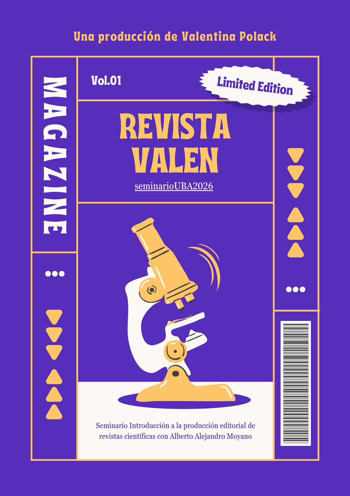

Revista Valen de ideas
Vol. 01, Núm. 01
2026
Las deudas pendientes de la digitalización en América Latina
Polack, Valentina
Desigualdad digital y rendimiento académico en la educación superior: un estudio comparativo en universidades públicas de Argentina y México
Polack, Valentina
Reseña bibliográfica
Polack, Valentina